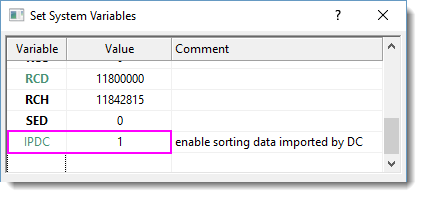

FAQ-1053 Wie lasse ich das Ändern von Daten zu, wenn ich einen Datenkonnektor verwende?
Change-Data-When-Connector-Used
Letztes Update: 13.10.2021
Daten, die über Datenkonnektor importiert wurden, werden standardmäßig geschützt.
- Daten, die über die Text-/CSV- und Excel-Konnektoren importiert wurden, können nicht bearbeitet, aber sortiert werden.
- Daten, die über andere Konnektortypen als Text/CSV und Excel importiert wurden, sind weder bearbeitbar noch sortierbar.
Daten, die mit einem Datenkonnektor importiert wurden, frei bearbeiten oder sortieren
Anwender, die mit Datenschutz nichts zu tun haben, können alle Sortier- und Bearbeitungseinschränkungen umgehen, indem sie den Wert der LabTalk-Systemvariable @IPDC ändern, bevor sie ihre Daten importieren.
- Wählen Sie Einstellungen: Systemvariablen.
- Geben Sie im Dialog Systemvariablen festlegen in der Spalte Variable "IPDC" ein und "0" in der Spalte Wert.
- Importieren Sie die Daten mit dem Datenkonnektor.
 | Falls Sie alle Beschränkungen nur für die aktuelle Sitzung entfernen möchten, klicken Sie auf Fenster: Skriptfenster. Geben Sie in die Befehlsaufforderung Folgendes ein und drücken danach Enter:
@IPDC=0
|
Methoden zum Bearbeiten von Konnektordaten, die bereits importiert wurden
Um Daten, die über Konnektor importiert wurden, zu ändern, klicken Sie auf das Konnektorsymbol  und wählen Sie eine der folgenden Optionen:
und wählen Sie eine der folgenden Optionen:
- Importierte Daten entsperren: Die Daten bleiben entsperrt, bis Sie auf das Konnektorsymbol klicken und Importieren wählen (zu diesem Zeitpunkt werden die Daten überschrieben und der Bearbeitungsschutz wiederhergestellt).
- Verbindung zum Blatt aufheben: Die Verbindung zwischen dem Arbeitsblatt/der Matrix und der Datenquelle wird entfernt. Auch der Bearbeitungsschutz wird entfernt. Das Konnektorsymbol bleibt und ermöglicht es Ihnen, dass Sie Ihre Datenquelle wieder verbinden können (damit werden die Daten überschrieben und der Bearbeitungsschutz wiederhergestellt).
- Datenkonnektor entfernen: Die Datenkonnektoren werden permanent aus allen Blättern der aktiven Mappe entfernt. Der Bearbeitungsschutz wird aus allen Blättern entfernt. Entfernen Sie außerdem das Häkchen bei Importierte Daten beim Speichern ausschließen.
Einschränkungen der Konnektordaten verfeinern
Es gibt andere Optionen zum Lockern der Einschränkungen beim Bearbeiten von Konnektordaten ohne den Schutz vollständig zu entfernen. Dies erfordert erneut das Ändern des Werts der LabTalk-Systemvariable @IPDC vor dem Importieren Ihrer Daten.
Um beispielsweise das Sortieren von Daten, die über einen anderen Konnektor alsText/CSV oder Excel importiert worden sind, zu ermöglichen, das Bearbeiten aber immer noch zu verhindern:
- Wählen Sie Einstellungen: Systemvariablen.
- Geben Sie im Dialog Systemvariablen festlegen in der Spalte Variable "IPDC" ein und "1" in der Spalte Wert.
- 
- Importieren Sie die Daten mit dem Datenkonnektor.
Schlüsselwörter:importieren, Daten verbinden, CSV, TXT, DAT, Excel, Konnektor, Spalte sortieren, Arbeitsblatt sortieren, Datenintegrität, Datenschutz